Voorbeelddata. Workshops, aanbieders, prijzen, beoordelingen en aantallen zijn verzonnen. Foto's zijn tijdelijk stockbeeld van Pexels.
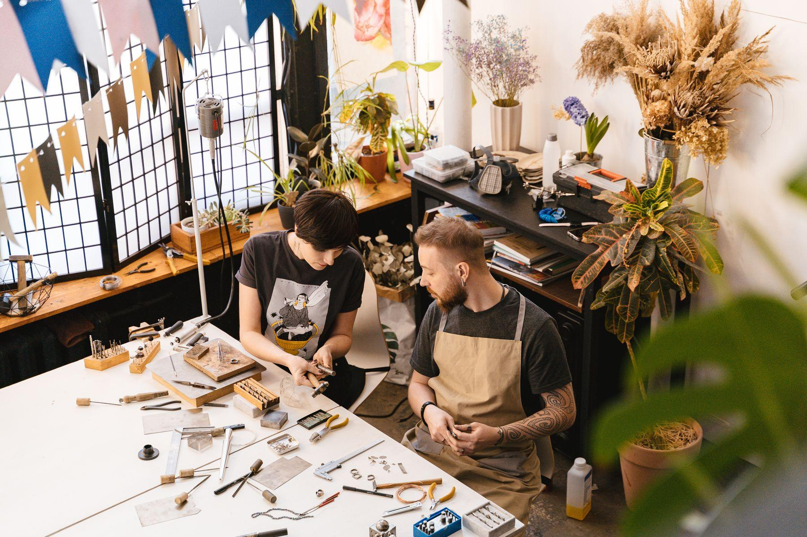
Van gevestigde kookstudio's tot de buurman die de beste zuurdesem van de stad bakt. Bij ons mag allebei, ook zonder btw-nummer en ook in een dorp waar verder niets te boeken valt.
Of begin bij een dag
Boekingskosten €0, altijd Aantallen zijn voorbeelddata
Vijf workshops die onze redactie zelf heeft uitgekozen. Bij elke workshop zie je de eerstvolgende datum en hoeveel mensen zich al hebben aangemeld.
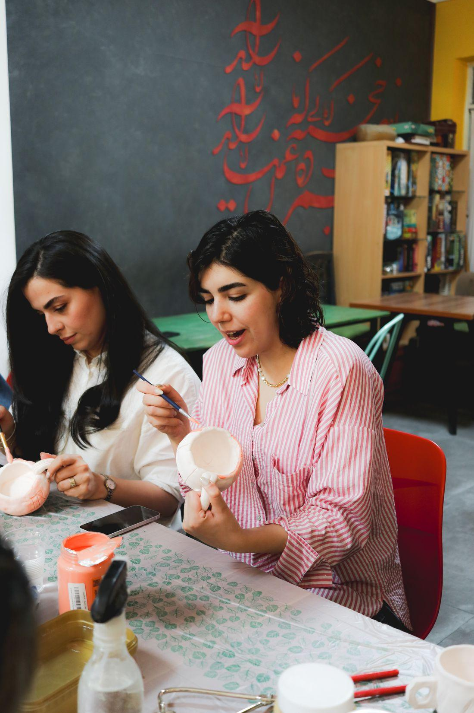
Utrecht, Wittevrouwen · 2 uur
za 14 nov, 13:00 +2 datums
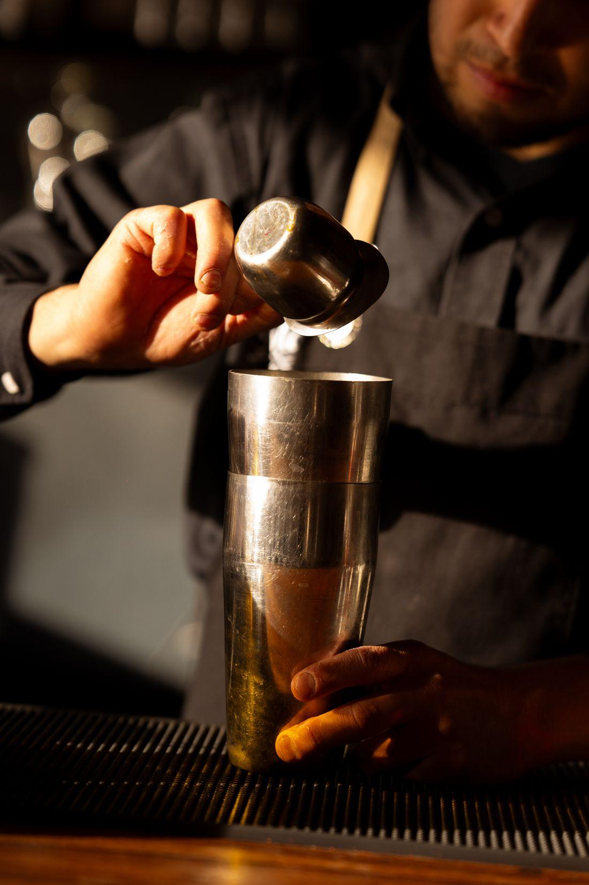
Rotterdam, Kralingen · 2 uur
vr 13 nov, 20:00 +2 datums
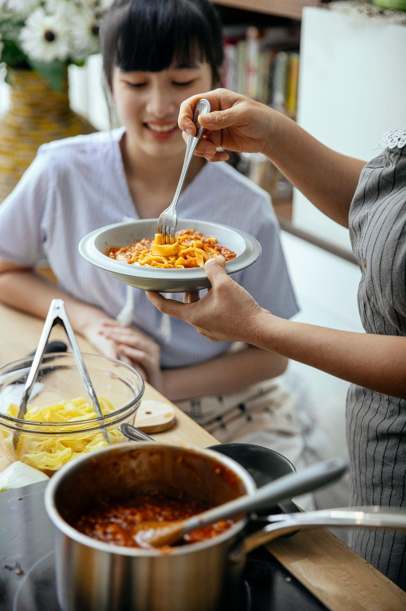
Amsterdam, De Pijp · 3 uur
zo 15 nov, 12:00 +2 datums
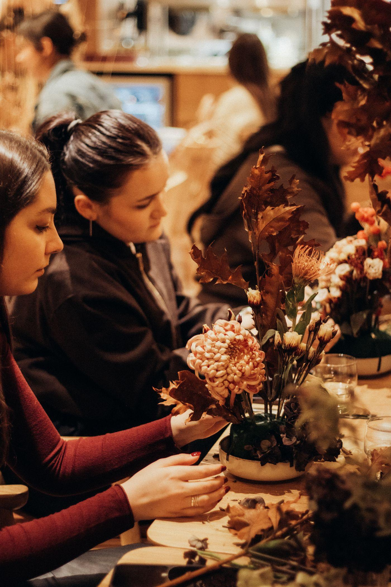
Den Haag, Statenkwartier · 2,5 uur
zo 15 nov, 14:00 +1 datum
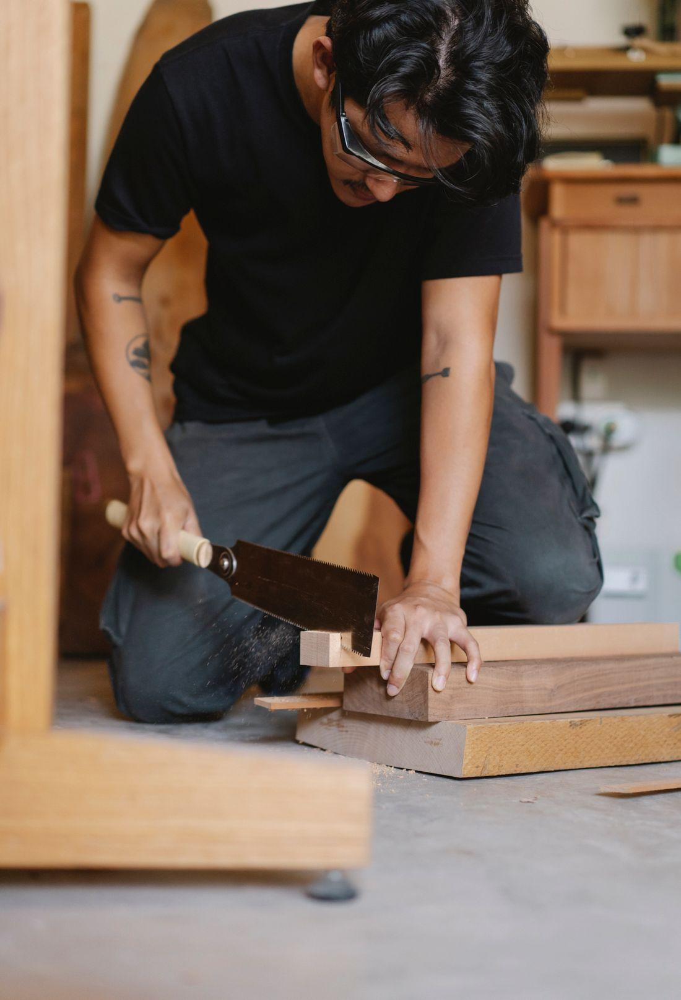
Utrecht, Leidsche Rijn · 4 uur
za 21 nov, 10:00 +1 datum
Filter op plek, datum, groepsgrootte en budget, en zie per datum of hij doorgaat.
Naar het aanbodWorkshops, datums en aantallen zijn voorbeelddata
Van een middag met je handen in de klei tot een boswandeling met een gids, met het aantal workshops erbij.
Aantallen zijn voorbeelddata
Een greep uit vrijdag 13 tot en met zondag 15 november. Het datumvak kleurt lichtpaars zodra een datum zeker doorgaat.
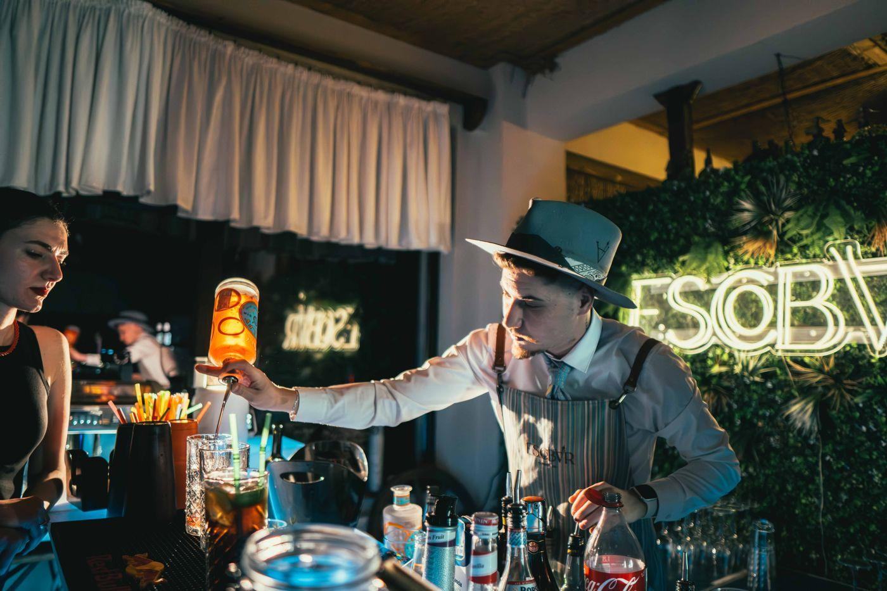
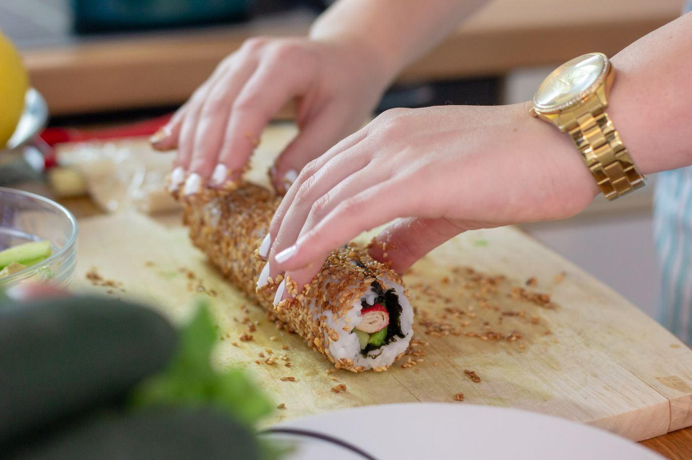
Workshops, datums en aantallen per dag zijn voorbeelddata
Sommige workshops hebben een minimum aantal deelnemers nodig. De workshopgever kiest dat aantal zelf, en ook het moment waarop de stand telt. Tot dat moment kun je je gewoon aanmelden.
Je krijgt vooraf een herinnering, en uiterlijk op het beslismoment hoor je of hij doorgaat. Is het minimum gehaald, dan gaat de datum door, ook als er daarna iemand afhaakt.
Meer over doorgaan en annulerenItaliaans koken met Luca: verse pasta · 8 plekken, gaat door bij 4
Minimum gehaald Hij gaat zeker door. Je ziet het aan het lichtpaarse datumvak.
Niet gehaald Je krijgt een andere datum aangeboden.
Ken je iemand die mee wil? Deel de datum, dan zit het minimum er sneller in.
Workshop, datums en aanmeldingen zijn voorbeelddata
Betalen via de site kan op zijn vroegst vanaf januari 2027. Je meldt je aan en je plek staat vast. Bij de meeste workshops annuleer je tot 48 uur vooraf gratis.
Hoe de pilot werktEen plaats krijgt pas een eigen pagina zodra er genoeg aanbod staat om er iets te kiezen te hebben.
Een review kan pas nadat de workshop is geweest, dus je leest alleen mensen die er waren.
“We gingen voor een middagje uit en kwamen thuis met twee scheve kommen en een hele goede dag.”
“We kwamen voor de wijn en bleven hangen voor de verhalen. Ik proef nu echt het verschil tussen twee druiven.”
“De boswachter liet ons drie vogels horen die ik nu overal herken. Voor 19 euro een ochtend die bleef hangen.”
Reviews zijn voorbeeldtekst
Vertel ons de groepsgrootte, het budget en de plaats. Binnen één werkdag hoor je van ons, met aanbod in de buurt van jullie kantoor.
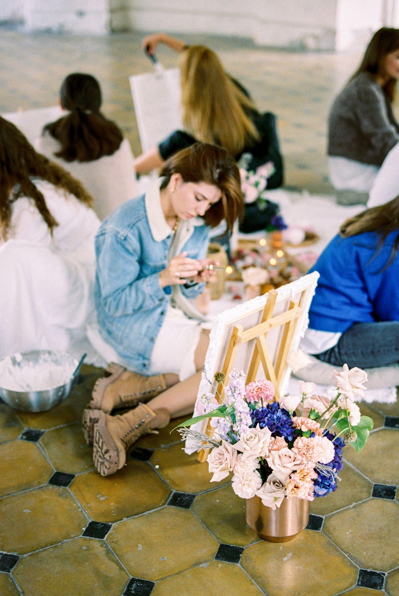
Geen btw-nummer nodig om te beginnen, wel een korte check voordat je workshop live gaat. Per datum kies jij hoeveel mensen er minimaal nodig zijn en tot wanneer.
Geen eigen keuken of atelier? Bekijk ruimtes die op jouw tijden leeg staan en spreek het rechtstreeks met de eigenaar af. Locatie gezocht · Ik heb een ruimte
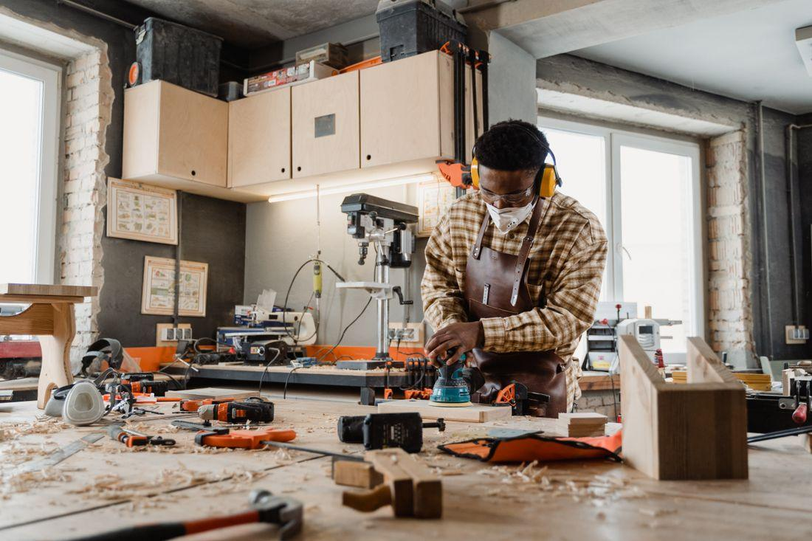
Met de Wicked cadeaubon kiest de ontvanger zelf de workshop en de datum. Je stuurt hem direct per mail.
Geldigheid en bedragen nog te bepalen
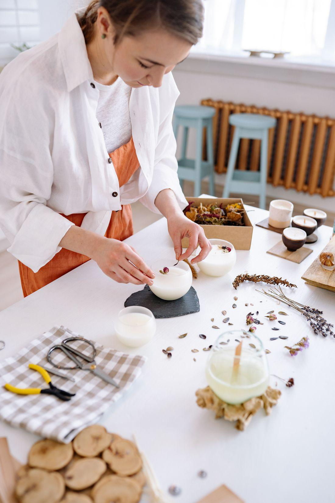
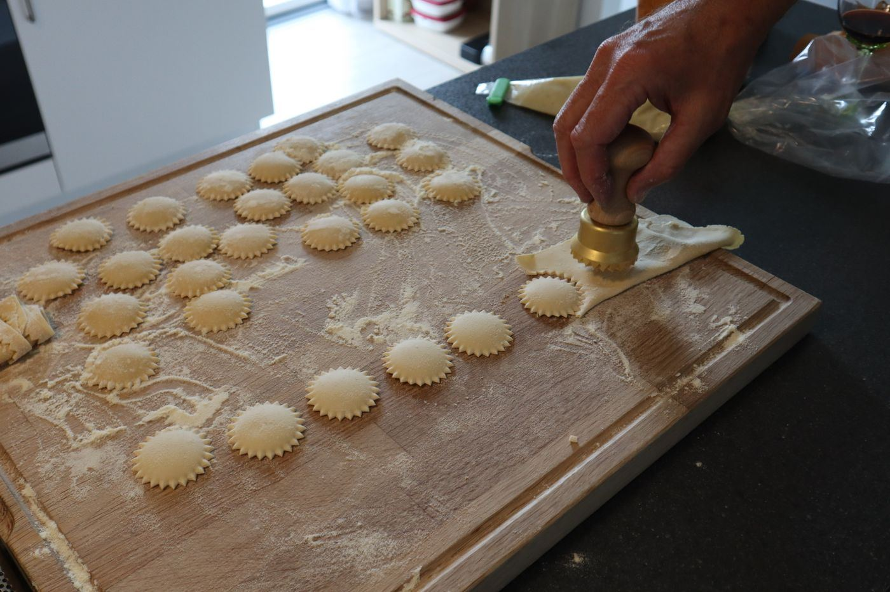
Bovenaan zie je per dag wat er de komende twee weken is, daaronder elke workshop met zijn eerstvolgende datums. Bij elke datum staat of hij zeker doorgaat, nog aanmeldingen nodig heeft of vol is.
31 workshops 4,8 gemiddeld over 1.204 reviews Boekingskosten €0, altijd
Aantallen en beoordelingen zijn voorbeelddata
Tijdens de pilot betaal je niets. Betalen via de site kan op zijn vroegst vanaf januari 2027. Je meldt je aan en je plek staat vast.
Hoe de pilot werktGeen enkele kookworkshop past bij al deze filters tegelijk. Haal er een paar weg, of wis alle filters.
Van dinsdag 10 tot en met zondag 22 november, op tijd van de dag. Klik een datum aan voor de workshop zelf, of kies een dag in de kalender.
Deze week
Volgende week
Week van 23 november
Met deze filters is er in deze dagen niets. In de lijst hieronder staan workshops die er later wel bij passen.
Tot en met zondag 22 november
Workshops, datums en aantallen zijn voorbeelddata
Gaat een datum niet door, dan krijg je een andere datum aangeboden.
31 workshops, de eerstvolgende datum bovenaan. Per workshop zie je zijn eerste drie datums met de stand.
9 van de 31 getoond
Workshops, datums en aantallen zijn voorbeelddata
Bij Wicked Workshops kook je in Utrecht bij een workshopgever in de stad zelf. Het aanbod loopt van verse pasta in Wittevrouwen en sushi in Lombok tot zuurdesembrood in Tuindorp en pizza uit de houtoven in Leidsche Rijn. Bij elke workshop staat wat je maakt, hoe lang het duurt en met hoeveel mensen je bent.
De meeste doordeweekse kookworkshops beginnen om half zeven of zeven uur 's avonds en duren twee tot drie uur. Op zaterdag kan het ook overdag: brood en taart in de ochtend, pasta en pizza in de middag. Met het filter 's Avonds of In het weekend zie je alleen die datums.
De workshops op deze pagina kosten tussen €34 en €55 per persoon, zonder boekingskosten. Je meldt je aan voor een datum en je plek staat vast. Staat er bij die datum “nodig”, dan gaat hij door zodra het minimum gehaald is. Uiterlijk op het beslismoment weet je het.
Workshops, wijken en prijzen in deze tekst zijn voorbeelddata
Je krijgt een herinnering vóór het beslismoment dat bij je datum staat.
Bij de meeste kookworkshops tot 48 uur vooraf gratis. Verzetten naar een andere datum kan kosteloos, zolang er plek is.
Bij de meeste workshops krijg je dan alles terug wat je betaald hebt en bieden we je een andere datum of workshop aan.
Ja, bij het aanmelden is daar een veld voor. Of een workshop vegetarisch kan, zie je met het filter Vegetarisch kan.
Voor groepen van tien tot twintig personen plannen we de datum met jullie samen, dus daar speelt geen minimum. Vraag een voorstel aan via Voor bedrijven; binnen één werkdag hoor je van ons.
Ook zonder bedrijf: we kijken je workshop na voordat hij live gaat. Geen eigen keuken? Bekijk keukens die leeg staan en spreek het rechtstreeks met de eigenaar af.
Word workshopgever Locatie gezocht4,9 (312 reviews) Wittevrouwen, Utrecht 3 uur 4 tot 8 personen Particulier
€45 per persoon
Kies een datum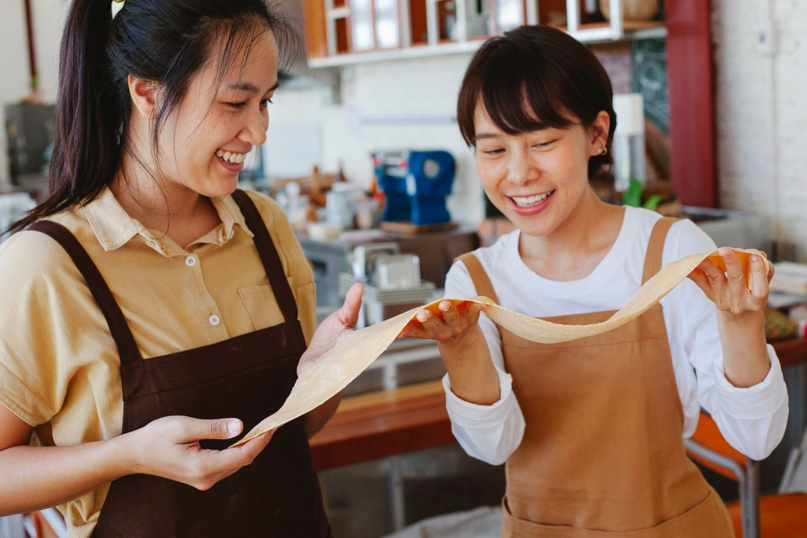
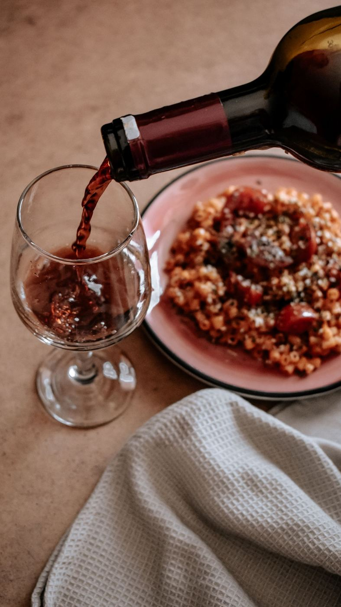
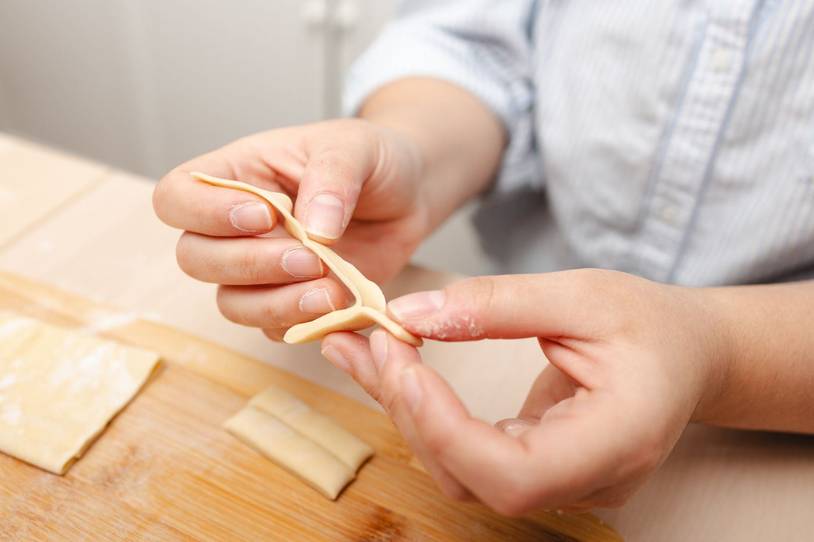
Alle zes komende datums, steeds op zaterdag van 15:00 tot 18:00. Per datum staat wanneer hij doorgaat, bij de meeste datums vanaf vier aanmeldingen. Bij acht is hij vol. Uiterlijk op het beslismoment, de vrijdag ervoor om 22:00, weet je of hij doorgaat.
za 21 nov, 15:00 tot 18:001 van 4 nodig
1 aangemeld. Het minimum voor deze datum is 4, er zijn 8 plekken.
Deel hem met wie je mee wilt nemen. Elke aanmelding telt mee voor het minimum, en je krijgt een herinnering vóór het beslismoment.
Gaat door blijft staan, ook als er daarna iemand afzegt.
3Betalenovergeslagen
Tijdens de pilot betaal je niets. Betalen via de site kan op zijn vroegst vanaf januari 2027.
Bevestigingvoorbeeld na aanmelden
za 21 nov, 15:00 tot 18:00
Bij Luca, Wittevrouwen, Utrecht
2 personen
Met jullie erbij staat de teller op 3. Het minimum is 4. Is dat er uiterlijk vr 20 nov, 22:00, dan gaat de workshop door.
Nog 1 aanmelding nodig. Deel de datum
Datums, aanmeldingen en prijzen zijn voorbeelddata
Je maakt in drie uur pastadeeg van bloem en ei, snijdt er tagliatelle van en vult ravioli met ricotta en spinazie. Luca laat zien hoe het moet, daarna doe je het zelf, aan één grote tafel in zijn keuken. Je sluit af met wat je gemaakt hebt.
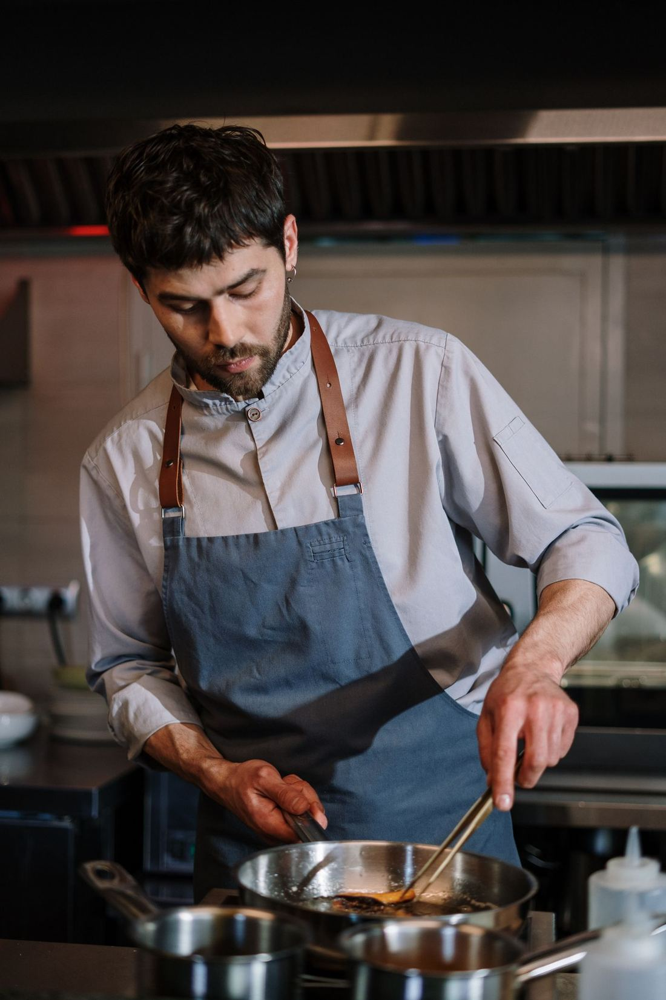
Luca kookt al twintig jaar voor vrienden en sinds 2024 ook voor mensen die hij nog niet kent. Zijn pasta leerde hij van zijn oma in Bologna; de keuken in Wittevrouwen is van hemzelf.
4,9 uit 389 reviews over zijn drie workshops
Particulier. Luca geeft workshops als privépersoon, niet als bedrijf. Je maakt je afspraak dus met een particulier, en dan geldt het consumentenrecht niet.
Werktekst, de definitieve tekst volgtZo werkt het bij de meeste workshops, ook bij deze.
Annuleert Luca, dan krijg je alles terug en een andere datum aangeboden. Kun je zelf niet, meld je dan af, dan komt je plek vrij voor een ander.
4,9312 reviews op deze workshop, alleen van mensen die via Wicked hebben geboekt
“Ik had nog nooit pasta gemaakt en ging naar huis met een bak tagliatelle die beter was dan uit de winkel. Luca is geduldig en grappig.”
“Kleine groep, iedereen aan één tafel. Het eten aan het eind voelde als een etentje bij vrienden.”
“Ravioli vullen is lastiger dan het lijkt. Luca bleef langs lopen tot het bij iedereen lukte.”
Ja. De meeste mensen komen met z'n tweeën, maar je kookt aan één tafel, dus alleen komen is heel gewoon.
Nee. Je naam en e-mail zijn genoeg. In de mail staat een link waarmee je je aanmelding terugziet en kunt wijzigen.
Tijdens de pilot betaal je niets. Betalen via de site kan op zijn vroegst vanaf januari 2027. Boekingskosten betaal je nooit.
Het menu is vegetarisch. Heb je een allergie of dieetwens, vul die dan in bij je aanmelding, dan weet Luca het vooraf.
Workshop, aanbieder, data, reviews en aantallen zijn voorbeelddata
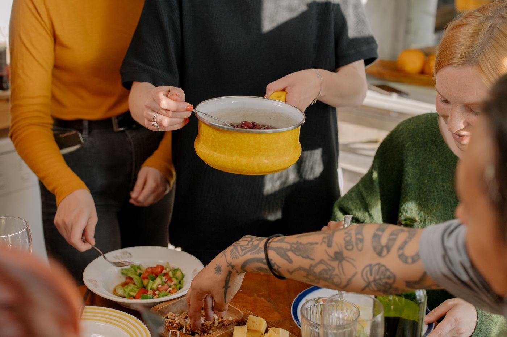
De keuken van Luca is te klein voor een team. Vertel ons wat je zoekt, dan zoeken wij een kookworkshop die past. Je hoort binnen één werkdag van ons. Het minimum per datum geldt niet voor bedrijfsuitjes.
Vraag een teamuitje aanParticulierWittevrouwen, Utrecht
Luca groeide op in Bologna en maakt al zijn hele leven pasta met de hand. Sinds 2024 kookt hij ook voor mensen die hij nog niet kent, in kleine groepen, in de keuken van zijn benedenwoning in Wittevrouwen.
Luca, zijn verhaal en de cijfers zijn voorbeelddata
Hij doet dit naast zijn werk, niet als bedrijf. Bij een particulier geldt het consumentenrecht niet. Wat er geldt bij annuleren en als een workshop niet doorgaat, staat bij elke workshop en in onze voorwaarden.
Werktekst, de definitieve tekst volgtPer kaart zie je de eerstvolgende datum, hoeveel mensen zich daarvoor al hebben aangemeld en of hij doorgaat. Alle datums van de drie workshops staan in de agenda hieronder.
za 14 nov, 15:00Gaat door
Nog 3 plekken. Nog 5 andere datums.wo 25 nov, 18:30Gaat door
Nog 2 plekken. Nog 2 andere datums.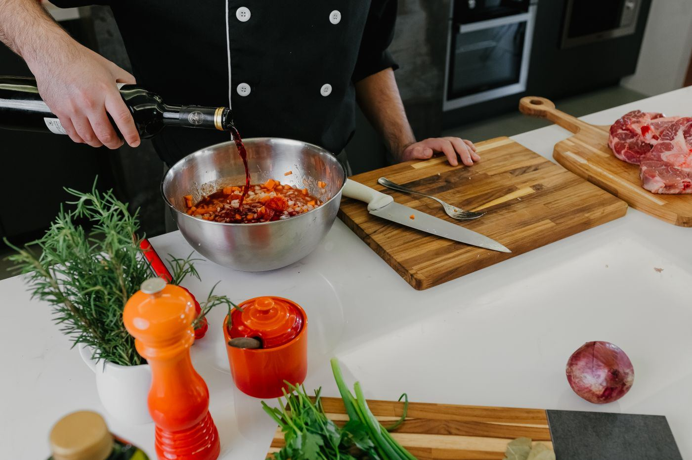
vr 4 dec, 18:302 van 4 nodig
Beslismoment do 3 dec, 22:00. Nog 1 andere datum.Workshops, datums en aanmeldingen zijn voorbeelddata
Elf datums in zes weken, van za 14 nov tot za 19 dec. Drie gaan door, zeven hebben nog aanmeldingen nodig en één is vol. Per datum staat wanneer hij doorgaat, bij de meeste datums vanaf vier aanmeldingen.
Verse pasta3 uur, €45 p.p. 4,9 uit 312
Ravioli2,5 uur, €42 p.p. 4,9 uit 51
Koken met wijn3,5 uur, €49 p.p. 4,8 uit 26
Geen datums met deze stand.
aangemeldnog nodig voor het minimumvrij
Agenda, datums en aanmeldingen zijn voorbeelddata
“Bij ons thuis kookte niemand alleen. Mijn oma rolde het deeg, ik sneed, mijn broer at het stiekem rauw op. Dat wil ik hier ook: dat je niet kijkt naar een kok, maar zelf je handen in het meel hebt.”
Luca werkt met acht plekken aan één tafel. Hij kookt zonder recept op papier, de recepten krijg je na afloop mee. Je eet samen op wat je gemaakt hebt, met een glas wijn uit de streek waar hij vandaan komt.
4,9
Alleen wie via Wicked heeft geboekt en heeft meegedaan, kan een review schrijven.
“Luca vertelt over zijn oma terwijl je kneedt. Je vergeet dat je bij iemand thuis bent.”
“Mijn ravioli zagen er niet uit, maar ze waren heerlijk. Hij lachte mee.”
“Ossobuco die drie uur moet stoven, dus veel tijd om te praten. Een uur korter had ook gekund.”
“Cadeau gekregen van mijn zus, nu wil ik zelf een pastamachine.”
Reviews, verdeling en namen zijn voorbeelddata
Volg hem met je e-mailadres, of stuur dit profiel door naar wie ook graag kookt.
Je hebt geen btw-nummer nodig om te beginnen. Je maakt een account met alleen je e-mailadres en zet je workshop klaar in zes stappen.
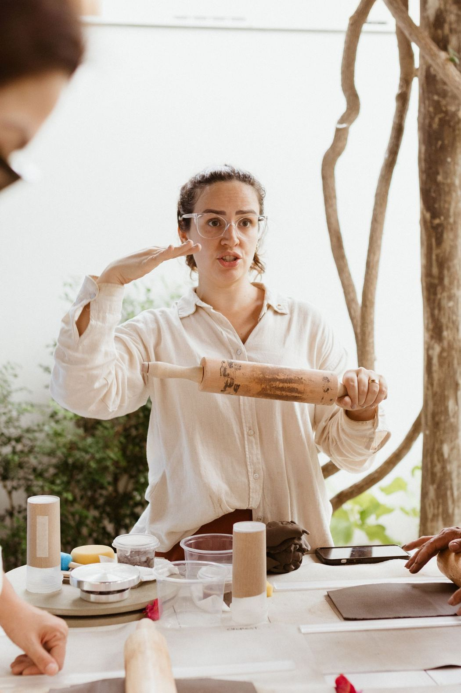
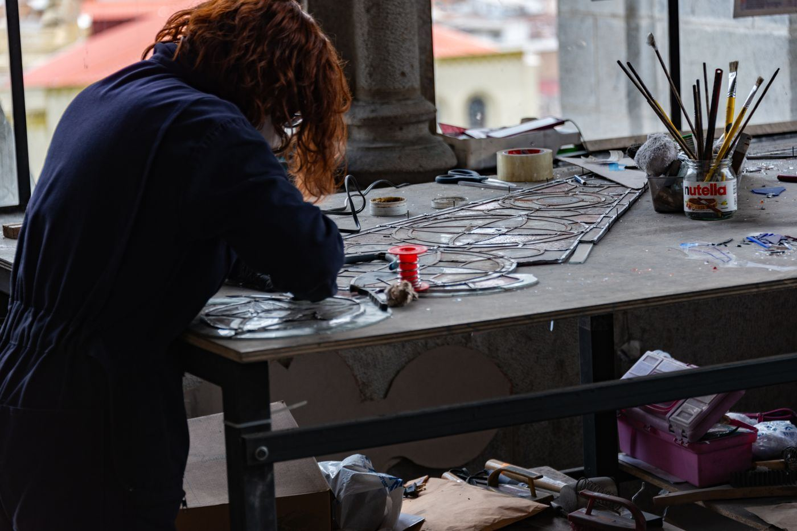
Geef je op zaterdag les aan je keukentafel, dan meld je je op dezelfde manier aan als iemand met een eigen studio. Het verschil zit in wat deelnemers bij je workshop lezen en wat je in je aanbiedersverklaring invult.
Bij je workshop staat dat je als ondernemer aanbiedt. In je aanbiedersverklaring vul je je KvK-nummer en handelsnaam in.
Bij je workshop staat dat je als particulier aanbiedt, met de melding dat het consumentenrecht dan niet geldt. KvK-gegevens heb je niet nodig.
Met of zonder bedrijf: je workshop gaat langs dezelfde check.
Zes stappen in de wizard, en de gevoelige gegevens pas als je workshop klaarstaat.
Meer hebben we in het begin niet nodig. Inloggen met een social account kan ook.
Je kunt tussendoor stoppen en je workshop als concept opslaan.
Die vraag stellen we in de wizard. Geen eigen ruimte? Een eindje verderop op deze pagina staan een paar ruimtes die vaak leeg staan, en je neemt zelf contact op met de eigenaar.
Bekijk de ruimtesStaat je workshop klaar, dan vragen we wie je bent en waar je voor tekent. Niet eerder.
Ons team bekijkt elke workshop voordat hij online gaat. Hoe die check precies loopt, werken we nog uit.
Deelnemers zien je datums, en jij ziet wie zich aanmeldt.
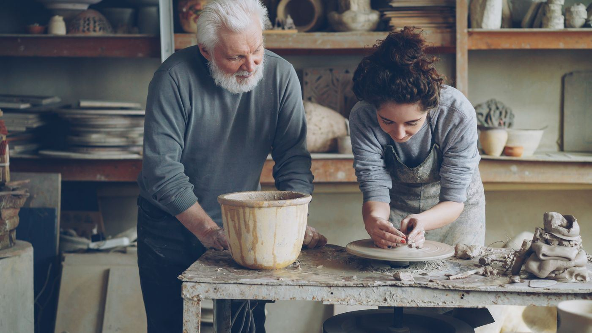
Geen abonnement en geen vaste kosten. Over wat je verkoopt, betaal je commissie. Die verschilt per categorie, tussen negen en twintig procent. Hoe meer concurrentie er in een categorie is op de hele markt, en hoe meer het promoten ervan kost, hoe hoger hij ligt.
Tijdens de pilot betaal je niets. Betalen via de site kan op zijn vroegst vanaf januari 2027. Deelnemers doen gratis mee, dus er is ook niets om uit te betalen.
Een workshop van €45 per persoon, met acht deelnemers
Samen betalen de deelnemers€360
Rekenvoorbeeld, prijs en aantal zijn voorbeelddata
Per datum zet je een maximum, en als je wilt een minimum en een beslismoment. Probeer het zelf: meld deelnemers aan of af en kijk wat je deelnemers op de kaart zien.
Nog één aanmelding en je workshop gaat door. Deelnemers kunnen de sessie delen.
za 12 dec, 15:00 · Utrecht, Wittevrouwen
3 van 8 plekken bezet, minimum 4
Bijna? Je krijgt een herinnering vóór het beslismoment, en deelnemers kunnen de sessie delen om zelf mensen mee te nemen.
Workshop, datums en aanmeldingen zijn voorbeelddata
Eigenaren van keukens, ateliers en zalen zetten hun ruimte op locatie gezocht. Je ziet wat er is en wanneer hij vrij is, en neemt zelf contact op met de eigenaar. In het schema is paars een dagdeel waarop de ruimte vaak vrij is.
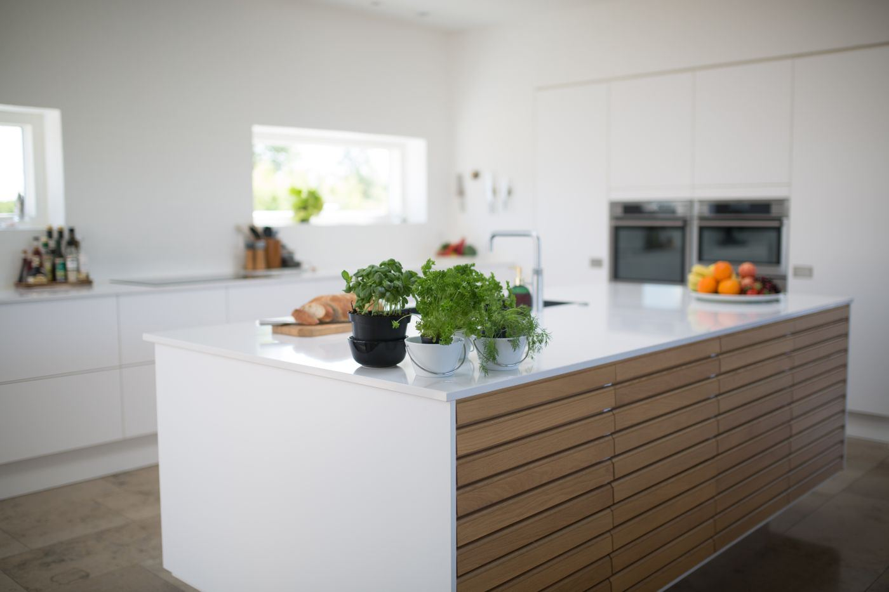
Utrecht · Keuken
| Dagdeel | ma | di | wo | do | vr | za | zo |
|---|---|---|---|---|---|---|---|
| Ochtend | vrij | ||||||
| Middag | vrij | vrij | vrij | ||||
| Avond | vrij |
Haarlem · Atelier
| Dagdeel | ma | di | wo | do | vr | za | zo |
|---|---|---|---|---|---|---|---|
| Ochtend | vrij | vrij | |||||
| Middag | vrij | ||||||
| Avond | vrij | vrij |
Amersfoort · Lokaal
| Dagdeel | ma | di | wo | do | vr | za | zo |
|---|---|---|---|---|---|---|---|
| Ochtend | |||||||
| Middag | |||||||
| Avond | vrij | vrij |
Huur, betaling, sleutel en schoonmaak regel je rechtstreeks met de eigenaar; Wicked Workshops is daar geen partij in. Past er niets, dan kan ons team helpen zoeken, maar een ruimte beloven we niet. Laat ons team meezoeken
Voorbeeldlocaties: namen, plaatsen en dagen zijn verzonnen
Staat je vraag er niet bij? Kijk op de hulppagina of stuur ons een bericht.
Nee. Je kunt ook als particulier workshops geven. Deelnemers zien bij je workshop dat je particulier bent. Of je particulier of ondernemer bent, geef je pas op in je aanbiedersverklaring, als je workshop klaarstaat.
Bij de meeste workshops krijgen je deelnemers dan alles terug, plus een andere datum. Tijdens de pilot betalen deelnemers niets, dus er hoeft niets terug.
Ja. Ons team kijkt pas mee als je hem indient voor de check, niet eerder.
Daarna start de wizard. Je hoeft niets in één keer af te maken.
Eigenaren zetten hier hun keuken, atelier of zaal neer als die vaak leeg staat. Workshopgevers zien wat er is en wanneer, en nemen zelf contact op met de eigenaar.
Je hebt een workshop, maar geen keuken, atelier of zaal. Kijk welke ruimtes vaak leeg staan en neem contact op met de eigenaar.
Bekijk de ruimtesEen keuken die maandag dicht is, een atelier dat 's avonds leeg is. Zet hem erbij, dan zien workshopgevers hem en nemen ze zelf contact met je op.
Meld je ruimte aanWicked Workshops is een plek om ruimtes te vinden. Huur, betaling, sleutel, schoonmaak, annuleren en aansprakelijkheid regel je rechtstreeks met de eigenaar; Wicked Workshops is daar geen partij in.
Filter op soort ruimte en op dag. In het schema van elke ruimte is paars een dagdeel waarop hij vaak vrij is.
Voorbeeldlocaties: namen, plaatsen en dagen zijn verzonnen
6 van 6 voorbeeldruimtes
Utrecht · Keuken
| Dagdeel | ma | di | wo | do | vr | za | zo |
|---|---|---|---|---|---|---|---|
| Ochtend | vrij | ||||||
| Middag | vrij | vrij | vrij | ||||
| Avond | vrij |
Haarlem · Atelier
| Dagdeel | ma | di | wo | do | vr | za | zo |
|---|---|---|---|---|---|---|---|
| Ochtend | vrij | vrij | |||||
| Middag | vrij | ||||||
| Avond | vrij | vrij |
Zwolle · Café
| Dagdeel | ma | di | wo | do | vr | za | zo |
|---|---|---|---|---|---|---|---|
| Ochtend | vrij | ||||||
| Middag | vrij | ||||||
| Avond | vrij |
Amersfoort · Lokaal
| Dagdeel | ma | di | wo | do | vr | za | zo |
|---|---|---|---|---|---|---|---|
| Ochtend | |||||||
| Middag | |||||||
| Avond | vrij | vrij |
Groningen · Keuken
| Dagdeel | ma | di | wo | do | vr | za | zo |
|---|---|---|---|---|---|---|---|
| Ochtend | |||||||
| Middag | vrij | vrij | |||||
| Avond | vrij |
Eindhoven · Atelier
| Dagdeel | ma | di | wo | do | vr | za | zo |
|---|---|---|---|---|---|---|---|
| Ochtend | vrij | ||||||
| Middag | vrij | ||||||
| Avond |
Geen voorbeeldruimte met deze combinatie. of laat ons team meezoeken.
Staat je vraag er niet bij? Kijk op de hulppagina of stuur ons een bericht.
Vraag het de eigenaar als je contact opneemt.
Spreek dat met de eigenaar af voordat de eerste workshop plaatsvindt.
Spreek vooraf met de eigenaar af wat er dan met de huur gebeurt.
Als eigenaar betaal je straks een vaste fee om je ruimte te laten zien. Hoe hoog die is, en of hij tijdens de pilot geldt, staat nog niet vast. Je hoort het voordat je iets betaalt. Werktekst, wordt nog uitgewerkt
Je meldt je ruimte aan met je e-mailadres. Of eigenaren daarna een account krijgen, staat nog niet vast.
Antwoorden over boeken, het minimum, annuleren, betalen en workshop geven. Zoek op een woord of kies een onderwerp. Staat je vraag er niet bij, dan stuur je ons een bericht.
Probeer een ander woord, of stuur ons een bericht. Dan zoeken we het voor je uit.
Van een workshop vinden tot de review na afloop.
Je kiest een datum, geeft aan met hoeveel je komt en vult je naam en e-mailadres in. Je plek staat nu direct vast. Er is geen aanvraag die de workshopgever nog moet goedkeuren.
Je boeking
Totaal€90
Hoe betalen nu werktWorkshop en prijs zijn voorbeelddata
Ja, nu wel. Je krijgt een bevestiging per mail, met een link waarmee je je aanmelding beheert. Wat er verandert zodra er via de site betaald wordt, lees je bij De pilot en betalen.
Een datum, het aantal personen, je naam en je e-mailadres. Een account is niet nodig.
Ja. In het boekformulier staat een veld voor dieetwensen.
Nee. Boekingskosten zijn €0, altijd. Je betaalt alleen de prijs van de workshop.
Overzichten staan op datum, de eerstvolgende sessie staat bovenaan. Op elke kaart zie je de datum, de plaats, de prijs, de beoordeling en hoe het met die sessie staat.
Alle plekken van die datum zijn bezet. Kijk bij de andere datums van dezelfde workshop.
Per datum staat wanneer hij doorgaat. Soms is dat bij een minimum aantal aanmeldingen, soms is er geen minimum. Is het minimum op het beslismoment gehaald, dan gaat de datum vanzelf door. Niemand hoeft daarover te beslissen.
3 van 4 nodig Beslismoment vr 11 dec, 22:00
Workshop en aantallen zijn voorbeelddata
Er hebben zich drie mensen aangemeld en het minimum is vier. Is het minimum gehaald op het beslismoment, dan gaat de datum door.
Bij elke datum staat de stand, en je ziet tot wanneer het minimum gehaald moet zijn. Je krijgt een herinnering voor het beslismoment. Uiterlijk op het beslismoment hoor je of de datum doorgaat.
Niemand. Het gaat vanzelf: is het minimum gehaald, dan gaat de datum door. Wordt het niet gehaald, dan gaat hij niet door.
Alleen als de workshopgever zelf annuleert. Dan krijg je bij de meeste workshops alles terug, plus een alternatief.
Dan gaat die datum niet door en krijg je een andere datum aangeboden.
Bij de meeste workshops gelden deze regels. Wat bij jouw workshop geldt, staat op de pagina van die workshop.
Bij de meeste workshops
| Tot 48 uur vooraf | Gratis annuleren |
|---|---|
| Binnen 48 uur | Je betaalt 50 procent |
| Verzetten | Naar een andere datum, kosteloos, zolang er plek is |
| Workshopgever annuleert | Alles terug, plus een alternatief |
Dan betaal je bij de meeste workshops 50 procent van de workshopprijs.
De kosten bij annuleren gelden pas zodra er via de site betaald wordt. Hoe het nu zit, lees je bij De pilot en betalen. Werktekst, wordt nog uitgewerkt
Wicked Workshops draait nu als pilot. Tijdens de pilot betaal je niets. Betalen via de site kan op zijn vroegst vanaf januari 2027.
Nee. Er is nu geen betaalstap: je aanmelding wordt bevestigd zonder betaling.
Eerst testen we het platform met een kleine groep deelnemers en workshopgevers. Zo zien we wat goed gaat en wat beter kan, voordat er via Wicked Workshops betaald wordt.
De prijs die bij de workshop staat, zonder boekingskosten. Die prijs zie je nu al op elke workshop.
Je hebt geen account nodig om te boeken. Je beheert je aanmelding via de link in je mail, en een account maak je daarna met één klik.
Nee. Je boekt met je naam en je e-mailadres.
Je ziet al je aanmeldingen en hun stand op één plek.
Alleen je e-mailadres. Geen geboortedatum, adres of telefoonnummer. Bij een aanmelding vragen we je naam.
Op de inlogpagina staat wat je dan kunt doen. Kom je er niet uit, stuur ons dan een bericht. Werktekst, wordt nog uitgewerkt
Een review hoort bij een echte boeking. Zo weet je dat de mensen die schrijven, echt hebben meegedaan.
Alleen mensen die via Wicked Workshops hebben geboekt. Je schrijft je review na afloop van de workshop.
Op het profiel van een workshopgever tellen de reviews over al zijn workshops samen. Bij een workshop staan alleen de reviews van die workshop.
Nee. Een beoordeling staat er altijd met het aantal reviews waarop hij is gebaseerd.
Bij elke workshopgever staat of het een ondernemer of een particulier is. Boek je bij een particulier, dan geldt het consumentenrecht niet. Werktekst, wordt nog uitgewerkt
Op de pagina van de workshop en op het profiel van de workshopgever.
Een particulier geeft workshops zonder bedrijf. Daarom geldt bij een particulier het consumentenrecht niet. Wat dat precies voor jou betekent, wordt nog uitgewerkt. Werktekst, wordt nog uitgewerkt
Een workshop met je team regel je via Voor bedrijven. Dat is een aanvraag, en je hoort binnen één werkdag van ons.
Naar Voor bedrijvenJa, voor groepen van tien tot twintig personen. Stuur via Voor bedrijven een aanvraag.
Binnen één werkdag.
Nee. De regel met een minimum en een beslismoment geldt niet voor bedrijfsuitjes.
Dat is nog niet uitgewerkt. Werktekst, wordt nog uitgewerkt
Van je account tot je eerste datum.
Je hebt geen bedrijf en geen btw-nummer nodig om te beginnen. Je maakt een account met je e-mailadres en zet je workshop in zes stappen in elkaar. Tussendoor bewaar je hem als concept.
Nee. Je kunt ook als particulier workshops geven. Wel kijken we je workshop na voordat hij online gaat.
Niet automatisch. Elke workshop gaat langs een check voordat hij online komt.
Alleen een e-mailadres voor je account. Gevoelige gegevens, zoals je IBAN, vul je pas in als je workshop klaar is.
Ja. Je bewaart hem als concept en gaat later verder.
Basis, inhoud, praktisch, beeld, prijs en datums.
Is je workshop klaar, dan vul je de aanbiedersverklaring in. Daarna kijken wij je workshop na. Pas na die check gaat hij online.
Pas als je workshop klaar is. Bij het maken van je account vragen we alleen je e-mailadres.
Je verklaart onder meer dat je 18 jaar of ouder bent, dat je zorgt voor een veilige uitvoering van je workshop en dat je incidenten meldt.
Ja. In de verklaring kies je of je particulier of ondernemer bent. Bij een ondernemer vragen we ook je KvK-nummer en je handelsnaam. Bij je workshop staat welke van de twee je bent.
Wij kijken je workshop na voordat hij online gaat. Hoe die check precies werkt en hoe lang hij duurt, is nog niet vastgelegd. Werktekst, wordt nog uitgewerkt
Geen vaste kosten. Je betaalt een commissie over de workshopprijs. Tijdens de pilot betaal je niets. Betalen via de site kan op zijn vroegst vanaf januari 2027.
Een percentage van de workshopprijs, dat per categorie verschilt: tussen 9 en 20 procent. Welk percentage bij jouw categorie hoort, wordt nog bepaald. Werktekst, wordt nog uitgewerkt
Zodra er via de site betaald wordt, krijg je je geld na afloop van de workshop.
Je hebt geen btw-nummer nodig om te beginnen. Hoe btw en facturatie precies werken, wordt nog uitgewerkt. Werktekst, wordt nog uitgewerkt
Per datum kies je het maximum aantal deelnemers, eventueel een minimum, en het beslismoment. Zonder minimum gaat de datum altijd door.
Nee, dat kies je zelf per datum. Zonder minimum gaat de datum altijd door.
Het tijdstip waarop het minimum gehaald moet zijn. Een voorbeeld: een workshop op zaterdag om 15:00 met acht plekken, die doorgaat bij vier deelnemers, met als beslismoment vrijdag 22:00.
Dan gaat die datum niet door. Wie zich had aangemeld, krijgt een andere datum aangeboden.
Niet door te weinig aanmeldingen. Staat een datum op “Gaat door”, dan blijft hij doorgaan, ook als iemand daarna afzegt. Moet je zelf annuleren, dan krijgen je deelnemers bij de meeste workshops alles terug, plus een alternatief.
Ja. Deelnemers kunnen een datum delen om zelf mensen te werven.
Ja, per datum.
Op je profiel staan wie je bent, je workshops met de eerstvolgende datum en de reviews over al je workshops samen.
Nee. Op het profiel staan geen eigen website, telefoonnummer of socials.
Alleen van mensen die via Wicked Workshops bij je hebben geboekt.
Dat staat op je profiel en bij je workshop, op basis van wat je in de aanbiedersverklaring hebt gekozen.
Heb je geen eigen ruimte, dan zoek je er een op Locatie gezocht. Staat jouw ruimte regelmatig leeg, dan laat je hem daar zien. Wicked Workshops is geen partij in de afspraken tussen jou en de eigenaar.
Op Locatie gezocht zie je per ruimte wat er is: of er een keuken is, de voorzieningen, het aantal plekken, de plaats en wanneer hij vaak vrij is. Met “Neem contact op met de eigenaar” leg je zelf contact.
Jij en de eigenaar, rechtstreeks met elkaar. Dat geldt ook voor schoonmaak, annuleren en aansprakelijkheid. Wicked Workshops is daar geen partij in en koppelt niet.
Vul het formulier op Locatie gezocht in. Ons team helpt je zoeken, maar we beloven geen match.
Als eigenaar betaal je straks een vaste fee om je ruimte te laten zien. Hoe hoog die is, en of hij tijdens de pilot geldt, staat nog niet vast. Je hoort het voordat je iets betaalt. Werktekst, wordt nog uitgewerkt
Stuur ons een bericht. Zakelijke aanvragen beantwoorden we binnen één werkdag.
Liever mailen? [e-mailadres volgt]
Kies waar je bericht over gaat en schrijf ons. Je antwoord komt per mail.
Zo ziet het scherm eruit nadat je bericht is verstuurd
We antwoorden per mail op sanne@voorbeeld.nl.
Naam, mailadres en workshop zijn voorbeelddata
Je beheert je boeking via de link in je mail. Een account maak je daarna met één klik, en daarvoor heb je alleen een e-mailadres nodig.
Vraag een link in je mail; die werkt ook als je je wachtwoord kwijt bent. Lukt het dan nog niet, kijk op de hulppagina of stuur ons een bericht.